Vetores
Apostilas
20 de novembro de 2025
Introdução
Vamos começar o estudo de vetores.
Na Física, as grandezas podem ser classificadas como escalares e vetoriais.
- Grandezas escalares são dadas por um número, por exemplo: distância, área, massa, etc.
- Grandezas vetoriais são dadas por um vetor que tem módulo, direção e sentido. São exemplos: velocidade, força peso, força resultante, etc.
Como o módulo de um vetor é um número, para saber o que é um vetor, precisamos refletir primeiramente:
O que é número?
O que é o número cinco?
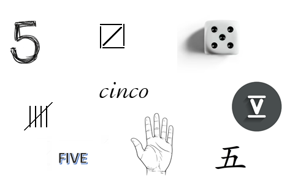
O que é o número cinco? (cont.)
- O número cinco é um conceito abstrato, representado de diferentes maneiras.
- Nenhuma dessas imagens é o número cinco; são representações do número cinco.
Vetores
- Vetores também são conceitos abstratos.
- São representados por segmentos orientados.
- Segmentos orientados paralelos, com mesmo comprimento e sentido, representam o mesmo vetor.
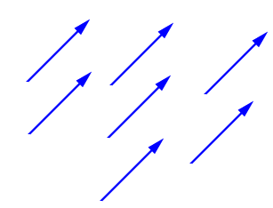
Do mesmo modo que a representação de um número não é o número, a representação de um vetor por um segmento orientado não é o vetor.
Operações com vetores — Soma
Soma: regra do paralelogramo.
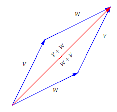
Na figura, vemos que a soma de vetores é comutativa: \(V + W = W + V\).
Operações com vetores — Associatividade
A soma de vetores também é associativa: \((V+W)+U = V+(W+U)\).
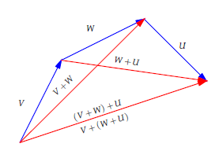
Operações com vetores — Vetor nulo e simétrico
O vetor nulo \(\vec{0}\) é representado por um ponto (mesmo ponto inicial e final).
- Elemento neutro da soma: \(V + \vec{0} = V\).
- Dado \(V\), o simétrico é \(-V\) (mesma direção, sentido contrário) e \(V + (-V) = \vec{0}\).
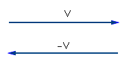
Operações com vetores — Diferença
Diferença: \(V - W = V + (-W)\).
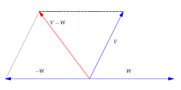
Operações com vetores — Diagonais
Dados \(V\) e \(W\), as diagonais do paralelogramo gerado por eles são a soma e a diferença.
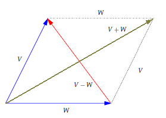
Operações com vetores — Multiplicação por escalar
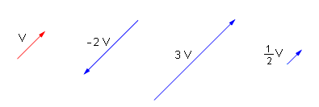
- Se dois vetores são múltiplos escalares, então são representados por segmentos orientados paralelos.
- Reciprocamente, se representados por segmentos orientados paralelos, então um é múltiplo escalar do outro.
Exercício 1
Mostre que o segmento que une os pontos médios de dois lados de um triângulo é paralelo e tem metade do comprimento do terceiro lado.
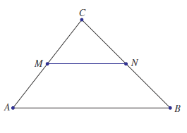
Exemplo 2
Mostre que as diagonais de um paralelogramo se cortam ao meio.
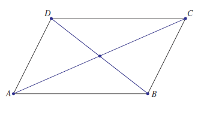
Exemplo 2 — Solução
Seja \(ABCD\) um paralelogramo. Defina \(V = \overrightarrow{AB}\) e \(W = \overrightarrow{AD}\). Então:
- \(\overrightarrow{AC} = V + W\);
- \(\overrightarrow{BD}= -V + W\).
Sejam \(M_{AC}\) e \(M_{BD}\) is pontos médios nas diagonais \(AC\) e \(BD\). Ora, \[\begin{align*} \overrightarrow{AM_{AC}}&=\frac 12\overrightarrow{AC}=\frac{V+W}{2}\\ \overrightarrow{AM_{BD}}&=\overrightarrow{AB}+\frac 12\overrightarrow{BD}=V+\frac{-V+W}{2}=\frac{V+W}{2}. \end{align*}\]
Isso quer dizer que o vetor com ponto inicial em \(A\) e ponto final em \(M_{AC}\) é o mesmo que o vetor com ponto inicial em \(A\) e ponto final em \(M_{BD}\). Logo, \(M_{AC}=M_{BD}\) e as diagonais se cortam ao meio.
Vetores em coordenadas
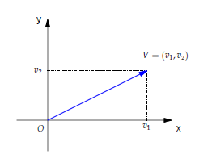
Por definição, as coordenadas de um vetor são as coordenadas do ponto final do seu representante com ponto inicial na origem.
Isso é muito importante: para pegar as coordenadas, represente o vetor por um segmento orientado saindo da origem.
Operações de vetores em coordenadas
Se \(V=(v_1,v_2)\) e \(W=(w_1,w_2)\), então \[ V+W = (v_1 + w_1,\ v_2 + w_2), \qquad \alpha V = (\alpha v_1,\ \alpha v_2). \]
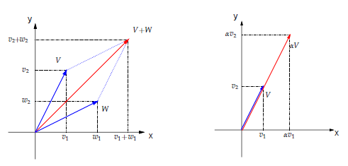
O vetor que liga dois pontos no plano
Dados dois pontos \(P\) e \(Q\) no plano, determinar as coordenadas do vetor \(\overrightarrow{PQ}\).

\[ \overrightarrow{OP} + \overrightarrow{PQ} = \overrightarrow{OQ} \;\Rightarrow\; \overrightarrow{PQ} = \overrightarrow{OQ} - \overrightarrow{OP}. \]
\[ \overrightarrow{PQ} = (\text{ponto final}) - (\text{ponto inicial}). \]
O vetor que liga dois pontos no plano (exemplo)
Se \(P=(2,4)\) e \(Q=(5,2)\), então \[ \overrightarrow{PQ} = \overrightarrow{OQ} - \overrightarrow{OP} = Q-P= (5,2) - (2,4) = (3,-2). \]
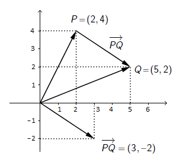
Observe o representante de \(\overrightarrow{PQ}\) saindo da origem.
Exercícios no plano cartesiano
- Os pontos \(P=(3,7)\), \(Q=(5,11)\) e \(R=(7,16)\) são colineares?
- Dados \(A=(x_1,y_1)\) e \(B=(x_2,y_2)\), mostre que o ponto médio de \(AB\) é \(M=\big(\tfrac{x_1+x_2}{2},\tfrac{y_1+y_2}{2}\big)\).
- Considere \(A = (-2,1)\) e \(B = (10,7)\). Determine \(C\) e \(D\) que dividem o segmento \(AB\) em três partes iguais.
- Dados \(A=(-1,3)\), \(B=(3,2)\) e \(C=(5,4)\), determine \(D\) tal que \(ABCD\) são vértices consecutivos de um paralelogramo.
Plano cartesiano e sistemas de coordenadas no espaço

Plano cartesiano e sistemas de coordenadas no espaço (cont.)
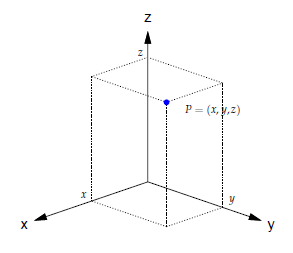
Plano cartesiano e sistemas de coordenadas no espaço (cont.)

No plano ou no espaço, as coordenadas de um vetor são as coordenadas do seu ponto final, quando representamos o vetor por um segmento orientado saindo da origem.
Norma = comprimento
Se \(V=(v_1,v_2)\), então \(\lVert V \rVert = \sqrt{v_1^2 + v_2^2}\).
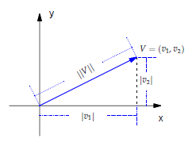
Norma = comprimento (cont.)
Se \(V=(v_1,v_2,v_3)\), então \(\lVert V \rVert = \sqrt{v_1^2 + v_2^2 + v_3^2}\).
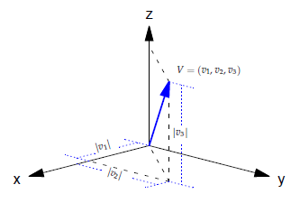
Distância entre dois pontos
Se \(P=(x_1,y_1)\) e \(Q=(x_2,y_2)\), então
\[\begin{align*} \overrightarrow{PQ}&=Q-P=(x_2-x_1 , y_2-y_1)\\ \operatorname{dist}(P,Q)&=\lVert\overrightarrow{PQ}\rVert=\sqrt{ (x_2-x_1)^2 + (y_2-y_1)^2 }. \end{align*}\]
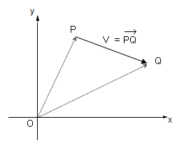
Vetores unitários
Se \(\alpha\in\mathbb{R}\) e \(V\) é um vetor, então \(\lVert\alpha V\rVert = |\alpha|\,\lVert V\rVert\) (por exemplo, \(\lVert-2V\rVert = 2\lVert V\rVert\)).
Um vetor \(V\) é unitário se \(\lVert V\rVert = 1\).
Se \(V\neq\vec{0}\), então existe um vetor unitário na mesma direção e sentido de \(V\): \[U\;=\;\Big(\tfrac{1}{\lVert V\rVert}\Big)\,V.\]
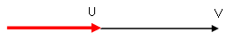
Vetores unitários — exercícios
- Determine um vetor unitário na direção da reta \(y=2x\). Quantos existem?
- Determine um vetor unitário na direção da reta \(y=-\tfrac{1}{2}x\). Quantos existem?
- Todo vetor unitário no plano é da forma \(U=(\cos\theta,\sin\theta)\). Interprete.
- Determine um vetor unitário na direção da reta que liga \(P=(-1,2,4)\) e \(Q=(3,5,1)\).
Produto escalar
O produto escalar entre dois vetores \(V\) e \(W\) é o número real \[\langle V,W\rangle = \lVert V\rVert\,\lVert W\rVert\,\cos\theta,\] onde \(\theta\) é o ângulo entre \(V\) e \(W\).
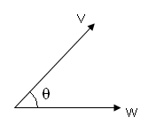
Além disso, \(\langle V,W\rangle = 0\) se \(V=\vec{0}\) ou se \(W=\vec{0}\).
Produto escalar — exemplo
Se \(V=(4,1)\) e \(W=(2,3)\), então \(\langle V,W\rangle = \lVert V\rVert\,\lVert W\rVert\,\cos\theta = \sqrt{17}\,\sqrt{13}\,\cos\theta\).
Mas como determinar \(\theta\)? E no espaço?
Lei dos Cossenos
Para calcular \(\theta\) e, portanto, o produto escalar, use a Lei dos Cossenos: \[a^2=b^2+c^2-2bc\cos\theta.\]
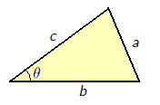
Daqui, \[ bc\cos\theta=\frac 12 (b^2+c^2-a^2) \]
Calcular produto escalar usando a Lei dos Cossenos
Sejam \(V=(v_1,v_2)\) e \(W=(w_1,w_2)\) vetores e seja \(\vartheta\) os seus ângulos. \[\begin{align*} \left<V,W\right>&=\|V\|\|W\|\cos(\vartheta)=\frac 12 (\|V\|^2+\|W\|^2-\|W-V\|^2)\\ &=\frac 12 (v_1^2+v_2^2+w_1^2+w_2^2-(w_1-v_1)^2-(w_2-v_2)^2)\\ &=\frac 12(v_1^2+v_2^2+w_1^2+w_2^2-(w_1^2-2v_1w_1+v_1^2)-(w_2^2-2v_2w_2+v_2^2))\\ &=v_1w_1+v_2w_2. \end{align*}\]
Logo
\[ \left<V,W\right>=v_1w_1+v_2w_2 \]
e não precisa saber o ângulo.
Produto escalar em coordenadas — teoremas
No plano, se \(V=(v_1,v_2)\) e \(W=(w_1,w_2)\), então \[\langle V,W\rangle = v_1w_1 + v_2w_2.\]
No espaço, se \(V=(v_1,v_2,v_3)\) e \(W=(w_1,w_2,w_3)\), então \[\langle V,W\rangle = v_1w_1 + v_2w_2 + v_3w_3.\]
Produto escalar — exemplo rápido
Se \(V=(4,1)\) e \(W=(2,3)\), então \(\langle V,W\rangle = 4\cdot 2 + 1\cdot 3 = 11\).
Ângulo entre dois vetores
Se \(V\) e \(W\) são dados em coordenadas, então \[\cos\theta\;=\;\dfrac{\langle V,W\rangle}{\lVert V\rVert\,\lVert W\rVert}.\]
O ângulo \(\theta\) entre dois vetores satisfaz \(0^\circ\leq\theta\leq 180^\circ\).
Ângulo entre dois vetores — exemplo
Se \(V=(4,1)\) e \(W=(2,3)\), então \[\cos\theta=\dfrac{11}{\sqrt{17}\,\sqrt{13}},\qquad \theta = \arccos\Big(\dfrac{11}{\sqrt{17}\,\sqrt{13}}\Big) \approx 42^\circ.\]
Classificação pelo produto escalar
Para \(V,W\neq\vec{0}\):
- \(\theta\) é agudo se \(\langle V,W\rangle > 0\);
- \(\theta\) é obtuso se \(\langle V,W\rangle < 0\);
- \(\theta=90^\circ\) se \(\langle V,W\rangle = 0\) (vetores perpendiculares ou ortogonais).
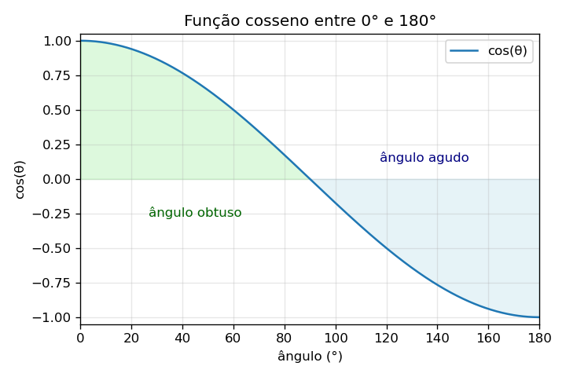
Assim, \(\langle V,W\rangle = 0\) determina a ortogonalidade de \(V\) e \(W\).
Exemplo: rotação de \(90^\circ\) no plano
Dado \(V=(a,b)\), o vetor \(W=(-b,a)\) é obtido de \(V\) por rotação de \(90^\circ\) anti-horária:
Observe que \[ \lVert V\rVert = \lVert W\rVert\quad \mbox{e} \quad\langle V,W\rangle = -ab + ab = 0 \] e \(V\) e \(W\) são ortogonais.
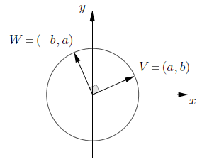
Exercícios
- Mostre que \(A=(3,0,2)\), \(B=(4,3,0)\) e \(C=(8,1,-1)\) são vértices de um triângulo retângulo. Calcule a área.
- No cubo unitário \(ABCDEFGH\), determine:
- o ângulo entre duas diagonais do cubo; são perpendiculares?
- o ângulo entre uma aresta e uma diagonal do cubo; é o mesmo para qualquer escolha?
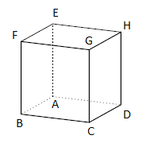
Propriedades do produto escalar
- \(\langle V,W\rangle = \langle W,V\rangle\).
- \(\langle U,V+W\rangle = \langle U,V\rangle + \langle U,W\rangle\).
- \(\alpha\,\langle V,W\rangle = \langle \alpha V,W\rangle = \langle V,\alpha W\rangle\).
Relação com matrizes: se \(V\) e \(W\) são colunas, \[\langle V,W\rangle = V^{T}W = \begin{bmatrix} v_1 & v_2 & v_3 \end{bmatrix}\!\begin{bmatrix} w_1 \\ w_2 \\ w_3 \end{bmatrix} = v_1w_1 + v_2w_2 + v_3w_3.\]
Projeção ortogonal
Dado um vetor não nulo \(V\) e um vetor \(W\), definimos a projeção ortogonal de \(W\) na direção de \(V\) como o vetor \(\operatorname{proj}_V(W)\).
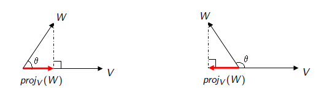
Se \(\theta = \angle(V,W)\):
- Se \(\theta\) é agudo, então \(\operatorname{proj}_V(W)\) é um múltiplo positivo de \(V\).
- Se \(\theta\) é obtuso, então \(\operatorname{proj}_V(W)\) é um múltiplo negativo de \(V\).
Projeção ortogonal — caracterização

O vetor \(\operatorname{proj}_V(W)\) é caracterizado por:
\(\operatorname{proj}_V(W)=\alpha V\) para algum \(\alpha\in\mathbb{R}\) e \(W - \operatorname{proj}_V(W)\) é ortogonal a \(V\).
De \(\langle W-\alpha V, V\rangle = 0\) segue que \[\alpha = \frac{\langle W,V\rangle}{\langle V,V\rangle}, \qquad \operatorname{proj}_V(W)=\frac{\langle W,V\rangle}{\langle V,V\rangle}\,V.\]
Projeção ortogonal – Exercícios
- Projeções ortogonais de \(W=(1,2)\) e \(U=(-1,2)\) sobre \(V=(3,1)\).
- Projeções ortogonais de \(W=(w_1,w_2,w_3)\) em cada eixo coordenado (\(\vec{i},\vec{j},\vec{k}\)).
- Para \(V=(1,2,-1)\) e \(W=(3,1,0)\) calcule \(\operatorname{proj}_W(V)\) e \(\operatorname{proj}_V(W)\).
Produto vetorial em \(\mathbb{R}^3\) — ideia
Dados dois vetores \(V\) e \(W\), queremos achar um vetor \(V\times W\) ortogonal a \(V\) e a \(W\).
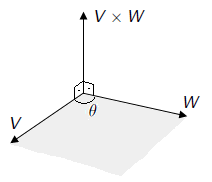
Pergunta: Quantos vetores perpendiculares a \(V\) e a \(W\) existem?
Como são vários (mas todos paralelos), precisamos apenas fixar o comprimento e o sentido.
Produto vetorial em \(\mathbb{R}^3\) — norma
Por definição, o comprimento de \(V \times W\) é a área do paralelogramo definido por \(V\) e \(W\).
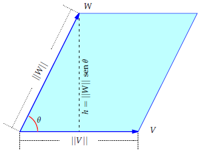
\[\lVert V \times W\rVert = \lVert V\rVert\,\lVert W\rVert\,\operatorname{sen}(\theta)\]
Já temos a norma e a direção de \(V \times W\). Falta fixar o sentido.
Produto vetorial em \(\mathbb{R}^3\) — sentido (regra da mão direita)
Por definição, o sentido de \(V \times W\) é tal que (nesta ordem) \(V\), \(W\) e \(V \times W\) satisfazem a regra da mão direita.
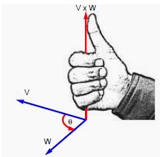
Produto vetorial — caracterização
O produto vetorial \(V \times W\) é caracterizado por:
- (norma) \(\lVert V \times W\rVert = \lVert V\rVert\,\lVert W\rVert\,\operatorname{sen}(\theta)\);
- (direção) \(V \times W\) é perpendicular ao plano de \(V\) e \(W\);
- (sentido) \(V\), \(W\) e \(V \times W\) satisfazem a regra da mão direita.
Produto vetorial — exemplo (enunciado)
Exemplo: Calcule o produto vetorial entre \(V=(-1,3,0)\) e \(W=(2,1,5)\).
É muito difícil calcular o produto vetorial usando apenas a definição dada. Para fazer este cálculo, vamos explorar primeiro as propriedades de \(V \times W\).
Propriedades do produto vetorial
Sejam \(V\) e \(W\) vetores em \(\mathbb{R}^3\). Então:
- \(V \times W = - (W \times V)\) (anti-comutatividade).
- \(V \times W = \vec{0}\) se (e somente se) \(V = \alpha W\) ou \(W = \alpha V\) (dependência linear).
- \(\langle V , V \times W\rangle = \langle W , V \times W\rangle = 0\) (ortogonalidade de \(V \times W\) a \(V\) e a \(W\)).
- Se \(\alpha\in\mathbb{R}\), então \((\alpha V) \times W = V \times (\alpha W) = \alpha ( V \times W )\) (homogeneidade).
- \(V \times (W+U) = V \times W + V \times U\) (distributividade à direita). Analogamente, \((V+U) \times W = V \times W + U \times W\).
- Se \(\alpha\in\mathbb R\), \((\alpha V) \times W = V \times (\alpha W) = \alpha ( V \times W )\).
Produto vetorial em coordenadas — canônicos
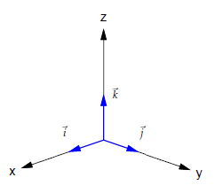
Vetores canônicos: \(\vec{i}=(1,0,0)\), \(\vec{j}=(0,1,0)\), \(\vec{k}=(0,0,1)\). Se \(V=(a,b,c)\) então
\[V = a\vec{i} + b\vec{j} + c\vec{k}.\]
Produto vetorial — produtos entre canônicos
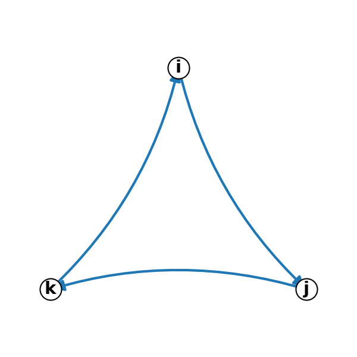
\[\begin{array}{ccccccccccccc} \vec{i} \times \vec{i}=\vec{0} & & & & & & \vec{j} \times \vec{i}=-\vec{k} & & & & & & \vec{k} \times \vec{i}=\vec{j} \\ & & & & & & & & & & & & \\ \vec{i} \times \vec{j}=\vec{k} & & & & & & \vec{j} \times \vec{j}=\vec{0} & & & & & & \vec{k} \times \vec{j}=-\vec{i} \\ & & & & & & & & & & & & \\ \vec{i} \times \vec{k}=-\vec{j} & & & & & & \vec{j} \times \vec{k}=\vec{i} & & & & & & \vec{k} \times \vec{k}=\vec{0} \end{array}\]
Produto vetorial — fórmula em coordenadas
Se \[\begin{array}{ccccccccc} V & = & (v_1,v_2,v_3) & = & v_1\vec{i} & + & v_2\vec{j} & + & v_3\vec{k} \\ W & = & (w_1,w_2,w_3) & = & w_1\vec{i} & + & w_2\vec{j} & + & w_3\vec{k} \end{array}\]
Ora, \[\begin{align*} V\times W&=(v_1\vec{i} + v_2\vec{j} + v_3\vec{k})\times (w_1\vec{i} + w_2\vec{j} + w_3\vec{k})\\ &=v_1w_1(\vec{i}\times \vec{i})+ v_1w_2(\vec{i}\times \vec{j}) + v_1w_3(\vec{i}\times \vec{k}) \\ &+ v_2w_1(\vec{j}\times \vec{i}) + v_2w_2(\vec{j}\times \vec{j}) + v_2w_3(\vec{j}\times \vec{k}) \\ &+ v_3w_1(\vec{k}\times \vec{i}) + v_3w_2(\vec{k}\times \vec{j}) + v_3w_3(\vec{k}\times \vec{k})\\ &=(v_2w_3-v_3w_2)\vec{i}+(v_3w_1-v_1w_3)\vec{j}+(v_1w_2-v_2w_1)\vec{k}\\ &=(v_2w_3-v_3w_2\ ,\ v_3w_1-v_1w_3\ ,\ v_1w_2-v_2w_1 ). \end{align*}\]
Produto vetorial — fórmula em coordenadas
Calculamos para \(V=(v_1,v_2,v_3)\) e \(W=(w_1,w_2,w_3)\) que \[\begin{align*} V\times W&=(v_2w_3-v_3w_2)\vec{i}+(v_3w_1-v_1w_3)\vec{j}+(v_1w_2-v_2w_1)\vec{k} \\&=(v_2w_3-v_3w_2\ ,\ v_3w_1-v_1w_3\ ,\ v_1w_2-v_2w_1 ). \end{align*}\]
Forma mnemônica (determinante simbólico):
\[V \times W = \det\begin{bmatrix} \vec{i} & \vec{j} & \vec{k} \\ v_1 & v_2 & v_3 \\ w_1 & w_2 & w_3 \end{bmatrix}.\]
Produto vetorial — exemplo (cálculo)
Calcule \(V \times W\) para \(V=(-1,3,0)\) e \(W=(2,1,5)\).
\[ V \times W = \det\begin{bmatrix} \vec{i} & \vec{j} & \vec{k} \\ -1 & 3 & 0 \\ 2 & 1 & 5 \end{bmatrix} \]
\[ V \times W = \vec{i}\begin{vmatrix} 3 & 0 \\ 1 & 5 \end{vmatrix} - \vec{j}\begin{vmatrix} -1 & 0 \\ 2 & 5 \end{vmatrix} + \vec{k}\begin{vmatrix} -1 & 3 \\ 2 & 1 \end{vmatrix}. \]
\[ V \times W = 15\vec{i} + 5\vec{j} -7\vec{k} = (15,5,-7). \]
Verificação: \(\langle V, V \times W\rangle = \langle W, V \times W\rangle = 0\).
Aplicação: área de triângulo no espaço
Exemplo 2. Calcule a área do triângulo \(ABC\) com \(A=(4,1,2)\), \(B=(3,5,3)\), \(C=(-2,3,5)\).
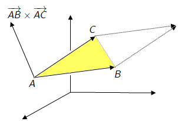
\[{\text{Área}(\triangle ABC)=\tfrac12\,\lVert \overrightarrow{AB} \times \overrightarrow{AC}\rVert}\]
Área de triângulo — cálculo
\(\overrightarrow{AB}=(-1,4,1)\), \(\overrightarrow{AC}=(-6,2,3)\).
\[\overrightarrow{AB} \times \overrightarrow{AC} = \det\begin{bmatrix} \vec{i} & \vec{j} & \vec{k} \\ -1 & 4 & 1 \\ -6 & 2 & 3 \end{bmatrix} = (10,-3,22).\]
Área \(= \tfrac12\sqrt{10^2+(-3)^2+22^2}= \tfrac12\sqrt{593}\).
Produto misto
O produto misto de \(U,V,W\in\mathbb R^3\) é \[ \left<U,V\times W\right>. \]
Ora, \[\begin{align*} \left<U,V\times W\right>&=\left<(u_1,u_2,u_3),(v_2w_3-v_3w_2 , v_3w_1-v_1w_3 , v_1w_2-v_2w_1)\right> \\&=u_1(v_2w_3-v_3w_2)+u_2(v_3w_1-v_1w_3)+u_3(v_1w_2-v_2w_1)\\ &= \det\begin{bmatrix} u_1 & u_2 & u_3 \\ v_1 & v_2 & v_3 \\ w_1 & w_2 & w_3 \end{bmatrix}. \end{align*}\]
Produto misto — interpretação geométrica
Teorema. Dados \(U,V,W\), \(\big|\langle U, V \times W\rangle\big|\) é o volume do paralelepípedo determinado por \(U,V,W\).
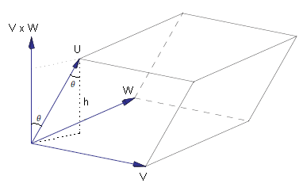
- Área da base: \(\|V\times W\|\).
- Altura: \(\|U\||\cos\vartheta|\).
- Volume: \(\|V\times W\|\|U\||\cos \vartheta|=|\left<U,V\times W\right>|\).
Vetores coplanares — caracterização
Teorema. Três vetores \(U,V,W\) em \(\mathbb{R}^3\) são coplanares se e somente se \[\langle U, V \times W\rangle = 0\] ou, equivalentemente, o volume do paralelepípedo que eles determinam é zero.
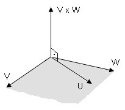
Aplicação: pontos coplanares
Exemplo 3. Verifique se \(A=(2,3,3)\), \(B=(4,1,3)\), \(C=(2,5,1)\), \(D=(3,3,2)\) são coplanares.
\(\overrightarrow{AB}=(2,-2,0)\), \(\overrightarrow{AC}=(0,2,-2)\), \(\overrightarrow{AD}=(1,0,-1)\).
\[\langle \overrightarrow{AB}, \overrightarrow{AC} \times \overrightarrow{AD}\rangle = \det\begin{bmatrix} 2 & -2 & 0 \\ 0 & 2 & -2 \\ 1 & 0 & -1 \end{bmatrix}=0.\]
Logo são coplanares.